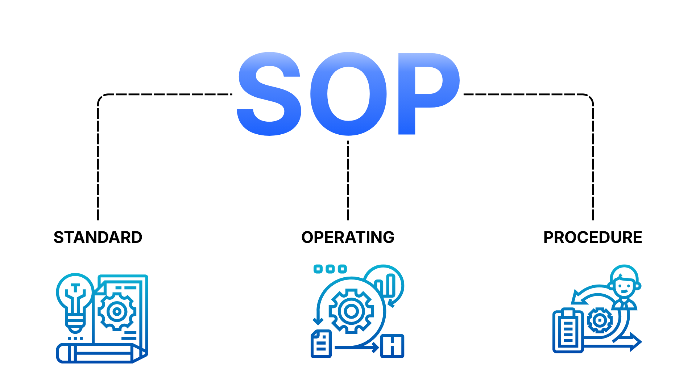

Shell script that archives .log files older than 7 days, automating routine log cleanup tasks on Linux systems.
Showcase of cloud infrastructure, security implementations, networking solutions, and IT automation projects.
Shell script that archives .log files older than 7 days, automating routine log cleanup tasks on Linux systems.

Deployed Ubuntu Server 24.04 and Windows 10 VMs on Azure, learning cloud provisioning and resource management.
Explored the AWS Pricing Calculator by adding EC2 instances, storage, and comparing pricing models for cost estimation.
Created an isolated private network between two Hyper-V VMs, enabling inter-VM communication without host access.
Configured a custom AWS VPC, launched an EC2 instance, and established SSH access with a public IP and security groups.
Built a Windows Server environment in VirtualBox with Active Directory, DNS, SQL Server, and IIS to simulate a real office setup.
Created and managed two Linux VMs in VirtualBox, performing file and directory operations entirely through the terminal.
Set up a virtual lab with Kali Linux and Metasploitable 2, performing network scanning and exploitation techniques.
Configured Azure Blob Storage for an organisation, creating resource groups, storage accounts, and access controls.

Calculated subnet ranges and assigned static IPs across a small VirtualBox virtual network environment.

Simulated a real-world IT office in Hyper-V with remote server and network printer management.
Set up Windows 10 and Windows Server 2016 VMs in Hyper-V, configuring resources, networking, and snapshots.
Deployed a Windows Server domain with Active Directory, DNS, and Group Policy Objects for centralised policy management.

Analysed virtualization challenges and compared VMware, Hyper-V, and VirtualBox on performance, security, and scalability.

Conducted a simulated web app vulnerability assessment using Nmap, Burp Suite, OWASP ZAP, and OpenVAS with POPIA compliance focus.
This blog post breaks down how IP addresses work in a network using simple, real-world analogies to make the concept easier to understand.
Automated IT onboarding by bulk-creating Active Directory users from a CSV file using a PowerShell script.

Resolved stuck print queue issues through service restarts and manual queue management — a common Tier 1 helpdesk scenario.
Configured GPOs and drive mapping via PowerShell to enforce domain-wide security and department-level policies.
Locked down a MySQL environment inside a private virtual network with strict firewall rules and a dedicated remote admin server.
Identified, partitioned, formatted, and mounted a new HDD on Linux for file storage using fdisk and mkfs.
Implemented a full Azure Monitor and alerting solution to detect and respond to VM performance anomalies in real time.
Resolved disconnected network drives caused by password changes using GPO and manual remapping techniques.

Walked through AD password reset with account unlock steps and IT support best practices for smooth user recovery.
Set up a headless MySQL server in VirtualBox accessible only via SSH from a remote admin VM — no direct local access.
Hardened a Linux VM with Fail2Ban and automated backup scripts pushing data to an Azurite blob storage emulator.

Created a structured SOP covering the full vulnerability assessment lifecycle — identification, analysis, and remediation.
Hosted a secure static site on AWS S3 with Route 53, CloudFront CDN, and an ACM SSL/TLS certificate.
Step-by-step Tier 1 guide for common OneDrive sync, access, and Microsoft 365 integration issues.
.jpg)
Comprehensive Tier 1 printer guide covering connections, drivers, print queues, and network printer issues.

Structured Tier 1 guide for diagnosing Wi-Fi issues — from checking physical connections to escalating ISP-level problems.